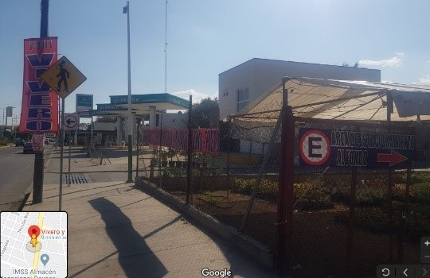
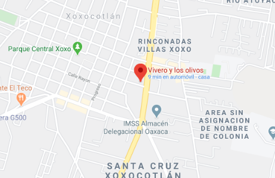

El vivero se encuentra en:
Guadalupe Hinojosa de Murat, Cabecera Municipal Santa Cruz Xoxocotlan, 71230 Xoxocotlán, Oax. Como referencia se encuentra el mercado “Santa Elena” a lado de este vivero y frente a este, el Chedraui de Xoxocotlán.

